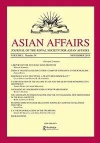
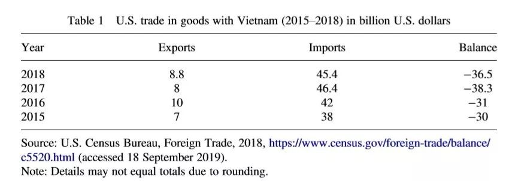

收录于合集
作品简介
【作者】
Joseph M. Siracus：约瑟夫·M·西拉库萨，人类安全与国际外交教授，澳大利亚皇家墨尔本理工大学亚太经合组织研究中心高级研究员，澳大利亚人文、艺术和社会科学委员会主席。
Hang Thi Thuy Nguyen:（Nguyễn Thị Thuý Hằng）阮氏翠恒（音译），越南河内外交学院国际政治和外交学院的讲师，康奈尔大学东南亚项目访问学者。
【编译】 晋玉（武汉大学中国边界与海洋研究院）
【审读】 丁伟航
【排版】 贺奕
【来源】
Siracusa, Joseph M., and Hang Thi Thuy Nguyen. “US-Vietnam Relations in the Trump Era.” Asian Affairs 50.4 (2019):602-618. DOI: 10.1080/03068374.2019.1672429
期刊介绍

《亚洲事务》（ Asian Affairs ）(原为《皇家中亚学会期刊》)自1914年起连续出版，致力于研究包括中亚、中东、南亚、东南亚和东亚的事务。期刊主要涉及政治、外交、历史等方面的学术文章，也包括新书评论、时事评论性文章。
特朗普时期的美越关系
U.S.-VIETNAM RELATIONS IN THE TRUMP ERA
内容提要
传统的美越双边关系呈现出既合作又斗争的特点。奥巴马执政时期，美国积极介入东南亚地区安全事务、帮助越南发展经济，美越双边关系呈现良好态势。尽管特朗普在总统大选时所宣扬的亚洲政策为美越双边关系带来了巨大的不确定性，但通过观察特朗普政府的实际行为、做出一系列阻止美越关系恶化的巨大努力，越南仍期待美越关系保持良好态势，走向成熟。 文章从政治、经济、安全等三个关键领域考察从2017年1月特朗普上台到2019年2月间美越的双边关系。文章发现在特朗普执政的头两年中，受共同利益的驱使美越之间的政治、经济和安全合作得到进一步深化，两国逐渐形成成熟的双边关系。
文章导读
一、美越政治关系
自1995年美越关系正常以来，两国关系一直在共同利益和共同关切的指导下发展演变，特朗普时期的美越关系也不例外。
奥巴马时期美越关系实现了跨越式进步。中国在南海地区的明确立场和态度使得美越两国愈走愈近。奥马巴政府的重返亚太政策及其牵头的跨太平洋伙伴关系协定（TPP）也为美越关系的进一步发展提供了保障。虽然特朗普上台后签署的退出TPP的决定使越南等相关国家倍感焦虑，但事实表明特朗普并未激进地彻底转变美国对亚洲，特别是对越南的政策。美国仍旧需要继续涉足亚洲，越南在其中的作用越发明显，这成为美越关系在特朗普执政的头两年继续走好的基础，而美越高层的互动进一步推动了两国关系的稳定发展。
2017年5月，越南总理Nguyen Xuan Phuc（音译：阮春福）应邀对美国进行正式访问，双方发表了《越南社会主义共和国和美利坚合众国关于推进全面伙伴关系的联合声明》（以下简称“《声明》”），强调两国间存在众多重要的共同利益，强调美越两国有大量合作机会。《声明》在重申奥巴马任期内确立的美越全面伙伴关系的基础上，承诺打造“更深入、更实质、更有效”的双边关系。此外《声明》表示特朗普政府会继续加强与包括东盟在内的主要区域机制的接触。作者认为强调东盟的中心地位有利于深化美越合作，强化美越关系，提升越南在该地区的重要性。
2017年11月，特朗普出席在越南岘港举办的APEC峰会，除了强调希望与印太国家加强联系外，特朗普再次重申要在《声明》的基础上加强美越关系。作者认为如果美国想要保持其在亚洲的地位，就应当认识到紧抓合作伙伴的重要性。由于越南奉行多样化、多边化的独立外交政策，希望成为所有国家的可靠伙伴，故越南满足美国对合作伙伴的需要，可以成为美国可靠的合作伙伴。
2019年2月8日，美朝领导人第二次会晤在越南首都河内举行。作者认为此举是特朗普政府在已经认识到越南的地缘战略地位和“不与一国结盟以对抗另一国”的外交政策后做出的决定，体现出两国政治互信程度的提升，是未来两国定期进行政治交流的坚实基础。
作者认为特朗普虽曾扬言大改彻改亚洲政策，但实际做出的改变呈现出连续性。特朗普政府已经认识到奥巴马重返亚太计划中确实存在一部分对美国国家利益至关重要的内容。而越南一开始虽然心存疑虑，但因为需要和平的区域和国际环境进行发展，仍选择保持谨慎的乐观心态努力维护与美国的政治关系。故特朗普执政的头两年，美越政治、外交关系维持着良好发展的势头。
二、美越经济关系
自2001年美越签署双边贸易协定（BTA）以来，美越贸易得以快速增长。特朗普作为“第一个公开支持贸易保护主义的总统”在上台后对美越贸易逆差表达了强烈的不满。与此同时，越南却迫切希望美国承认其市场经济地位，以全面落实两国全面伙伴关系。
2017年《声明》表示两国愿意共同解决贸易问题，开拓贸易关系。越南也承诺缓和两国间由贸易逆差引发的紧张关系，并通过加大进口美国货物的力度，取得了如表1所示的成果。虽然现在美越之间依然存在贸易逆差，越南仍要面对更多来自于美国的贸易调查，但作者表示对于美越贸易关系而言，越南加大从美国进口的力度显然比美国对越南施加高额关税更有益，并从“GDP增速、消费人数、政治稳定性”等5个方面点明与其他出口地相比越南之于需要进行出口贸易的美国企业所存在的优势，暗含呼吁美国停止可能减损美越贸易的行动之意。

其次，美国对越投资实现大幅增长。2017年阮春福访美签署了20多个涉及美、越企业的协议。同年，越南通过的《中小企业支持法》也能保障良好的经商环境，是吸引以美国为代表的外商投资的基础，其中包括美国通用电器公司。作者认为美国企业对越投资能同时为两国创造工作机会，并为两国经济相互支持、实现共同利益奠定基础。
最后，美国和越南在发展援助方面建立了良好的伙伴关系，特朗普政府时期，美国国际开发署对越南的支持在资金水平和项目规模方面继续稳步增长。
特朗普时期，美越政府为扩大两国经济关系在贸易、投资、发展援助等领域做出了众多努力。作者认为虽然美国、越南之间仍存在较大的贸易逆差，但这并未对美越贸易关系造成实质影响。究其原因有下：一，双方都认识到要追求长远利益而非贪图眼前利益，意识到要实现该目标需要两国加强合作；二，在美国商人对中国市场期待较低的情况下，越南经济的快速增长能为美国商人提供潜力巨大的市场。
三、美越安全关系
奥巴马执政时期美越安全合作得以扩大，特朗普政府也把美越安全合作视为美越双边关系中的焦点问题。在2017年12月发布的《国家安全战略》和2018年1月发布的《国防战略》中，特朗普政府都强调越南是一个越来越重要的国家，美国希望加强与越南的伙伴关系。
自2017年以来两军高级军官的频繁互动是美越安全合作增加的信号。2017年8月7日越南国防部长Ngo Xuan Lich（音译：吴春历）访问华盛顿。访问期间两国国防部长高度评价了在《推进双边防务合作谅解备忘录》、《防务关系共同愿景的联合声明》框架下开展的以海上安全为重点，包括海上搜救、联合国维和行动、人道主义救援以及国防教育与研究机构交流等五个领域的美越安全合作。2018年1月、10月美国国防部长两次访问越南，两国就海军培训、联合军演、解决战后遗留问题等事项进行交流。双方承诺在特朗普时期从范围、程度、速度上扩大两国安全合作。
除此之外，两国的安全关系也取得了实质性进展。美国为越南提供大量海上装备和财政支持。2017年5月，越南海岸警卫队接收了由美国海岸警卫队转交的汉密尔顿级巡逻舰和在美国外国军事融资(FMF)计划下的6艘45英尺长的快速巡逻艇。2018年4月接收了另外6艘巡逻艇。同年越南应邀参与了环太平洋军事演习(RIMPAC)。此外，美国国防部在2017年和2018年为越南提供了超过1600万美元的额外援助。美国表示希望借以上举动提升越南的海洋执法能力、搜救能力和其它人道救援能力。2018年3月，美国海军的大型核动力航空母舰“卡尔·文森号”(USS Carl Vinson)抵达岘港，停靠四日，这是自1975年美国军队撤离越南以来美国在越南最大的军事存在，是两军之间的互信和友谊的体现。
最后美越都对中国在南海的坚决态度感到担忧，因此加强安全合作符合两国的共同战略利益。在两国认知中，越南是南海的申索国，而美国作为一个太平洋强国对航行自由有着至关重要的利益，作者隐晦地表明两国“都有立场”参与南海地区事务。故两国进一步认为中国在南海的作为对他们造成威胁，认为这些作为“违反”了国际法，并可能成为造成地区不稳定的因素，认为两国应该相互合作以保护自己的利益，并为该地区的和平与安全做出贡献。
特朗普时期，美越的安全合作创造了多个首次。作者认为，这些积极的进展体现了美国政府因认识到越南对其亚洲政策的重要性而产生的与越南合作的强烈愿望和越南政府为推动两国战略关系的积极尝试。两国在过去两年的军事交流代表了两国政府在增加美越安全合作战略深度的承诺下，继续推进两国关系友好发展的意图。
四、结论
作者得出结论：美越关系在特朗普时期继续快速发展，在政治、经济和安全领域都取得了里程碑式的进步，双方合作良好，两国关系保持良好发展的势头。作者分析认为 双方都意识到印太地区战略环境的迅速变化，中国崛起为全球大国所带来的“破坏性”力量已经挑战了印太地区的现状。对此越南表示支持美国加强其在印太地区的存在，而美国为越南经济社会发展提供帮助，美越双方更加重视双边关系。但由于两国政治系统与意识形态的区别，美越关系中仍存在一些阻碍因素，人权问题是其中最尖锐的问题。 但作者预测，在这特殊的历史时期，在2017年之前取得的进展的基础上，特朗普政府和越南政府绝不会让上述分歧阻碍两国关系当前和未来的发展，成为经济、政治和军事合作由好变差的转折点。美越关系的前途一片光明。
_ ** _ ** _ ** _ 本文由国政学人独家编译推荐，文章观点不代表本平台观点，转载请联系授权。**__
扫下方二维码查看往期精彩
【政策评论】信誉之后：川普时代的美国外交政策丨国政学人 第301期
【霸权研究】大国竞争战略中的经济遏制丨国政学人
第302期
【新刊速递】第12期 | International Affairs, Vol.95, No.6，2019
【新刊速递】第13期|Chinese Journal of International Politics, No.4, 2019
【新刊速递】第14期|Chinese Journal of International Politics, No.3, 2019
【新刊速递】第15期 | International Organization, No.4, 2019
分类导览 1
分类导览 2

点“在看”给我一朵小黄花